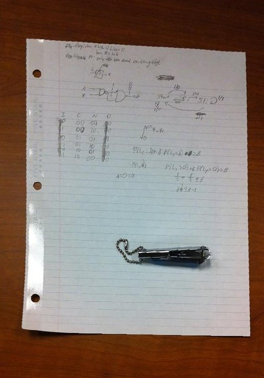
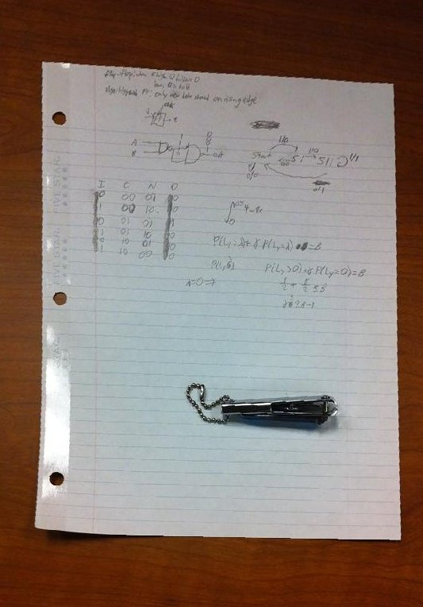

For this project, we used homography transformations to create warps between images, and subsequently create mosaics from stitching together a collection of images which represent a panomaric view of a scene. For simplicity and consistency, my implementation warps all images to the first one, so if the images are provided left-to-right as in my examples, all images are warped to the left-most one. First, I select control points matching each image to the first one, and find a homography transformation between them, by setting up a simple linear system of equations dependent on the number of control points provided. The resulting matrix has a 1 on the lower-left corner, used as a scaling factor because we are working with homogenous coordinates in each image. Next, I go through each image which is not the first and warp it to the first (which remains unwarped), growing my mosaic one-by-one. The warping occurs as follows: left-multiply the corners of the image by the transformation matrix to determine the size of the output image, then do inverse warping as done in project 5 to fill in the output pixels, interpolating where appropriate. I blend together the mosaics using three methods: a naive average, linear (alpha) blending, and Gaussian and Laplacian stacks (implementation taken from my project 3).
I will illustrate homographic transformations now!


I am now able to easily rectify an image by transforming a portion which I want to be a rectangle into a rectangle. Here are some examples!
 

As described in the Background section, I warp each image to the first one, growing my mosaic one image at a time, and blending together using three methods: a naive average, linear (alpha) blending, and Gaussian and Laplacian stacks with size 3. Here are results for all cases.


I learned that homography transformations are really cool, and actually not at all mathematically complex. It really does come down to a simple matrix multiplication. I was mostly surprised at how accurate image rectification can really be, and especially how it can be used to view shapes and drawings from completely different angles, offering new perspectives on elements of our visible world!
I was able to find the focal length of my camera in pixels by using information from the EXIF data tags, then fine-tuning the resulting value until my images looked best. The final value used in my code was f = 450 pixels.
1. Cylindrical Mapping
I implemented cylindrical mapping, projecting my mosaic onto a cylinder instead of a plane! To do this, I simply followed the transformation equations presented in class. Here are the results!
2. 3D Rotational Model
This part actually took me around 15-20 hours to implement........but I'm happy to say that I finally got it working. Basically, in the 3D rotational model, we exploit the fact that only a rotation takes place among pairs of our point correspondences, and so we can compute the optimal rotation matrix using some axis-angle representation math. We start with the observation that H = K * R * K^-1, where K is the camera intrinsic matrix with optical center (0, 0) and R is the rotation matrix between the points. (This assumption about the camera optical center being at the origin turns out to not affect the final result.) We begin with an estimate of R; in my code, I used the identity matrix. Then, we must apply an incremental update to the rotation matrix, by doing R = R_update * R. We continue this iterative procedure until the change to R is very miniscule. To find R_update, we exponentiate omega_cross using the expm function. w_cross is simply the cross product matrix times the vector of omegas, which can be determined using the Jacobian found in the book. Note here that omega basically encodes the direction and magnitude of the rotation, and so is the parameter of the axis-angle representation of the rotation of R.
All this took me a long time to implement and debug, but I finally got some neat results. The transformation is a lot more crisp using this method than using a homography transform.
3. Automatic Control Points and Alignment (Done for Part A!)
I was getting super bored of putting in my own control points, so I decided to automate this process! I performed the following steps. First, I implemented my very own Harris corner detector (no built-in library!) and used it on each image. I then used a technique called adaptive non-maximal suppression to only keep a nearly uniformly distributed subset of the chosen points for each image. After, I assigned each point a feature: pixels sampled from the 40x40 grid around that point. Next, I matched points in each image using these features. Finally, I used 4-point RANSAC to compute a good, robust homography matrix not affected by outliers/noise! The results are quite amazing!